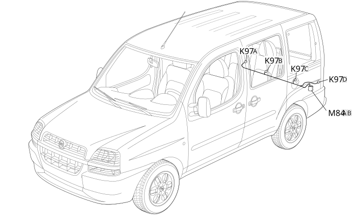

74 PARKING SENSOR BRIDGE
- Path
- Electrical equipment > 2 WIRING > 74 PARKING SENSOR BRIDGE
- Kind
- wiring harness
- Applies to
- engines: 1.2 8v, 1.6 16v, 1.9 JTD 8V, 1.9 DIESEL; all production periods
- Interactive page
- https://sloeber94.github.io/elrnDB-fDbl/en/#/223004141
Applies to: engines: 1.2 8v, 1.6 16v, 1.9 JTD 8V, 1.9 DIESEL; all production periods

Topics that link to this page (6)
- K097E PARKING SENSOR UNIT (PARKING SENSOR BRAID)
- K097F PARKING SENSOR UNIT (PARKING SENSOR BRAID)
- K097G PARKING SENSOR UNIT (PARKING SENSOR BRAID)
- K097H PARKING SENSOR UNIT (PARKING SENSOR BRAID)
- M084B PARKING SENSOR ECU (PARKING SENSOR BRAID)
- M84B PARKING SENSOR CONTROL UNIT ( PARKING SENSOR BRAID )